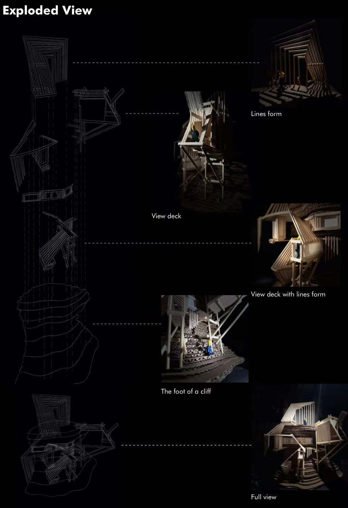
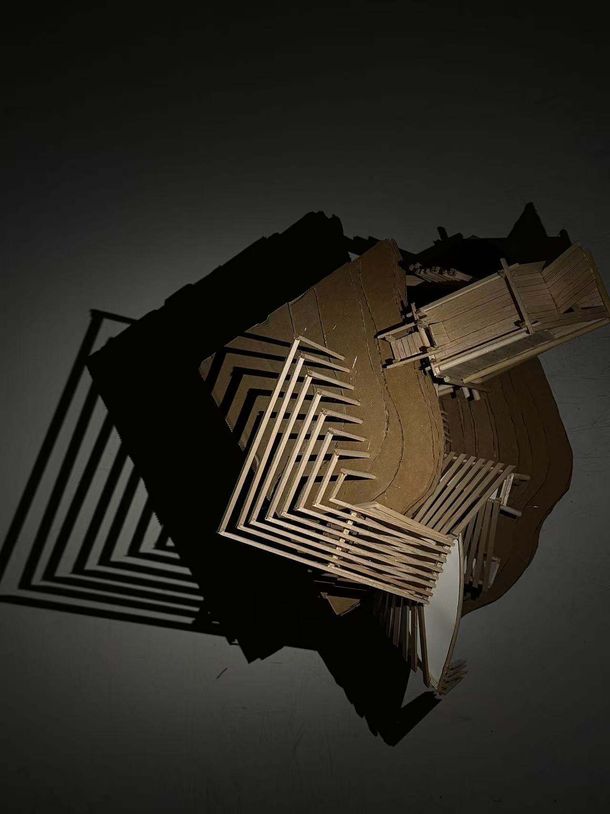
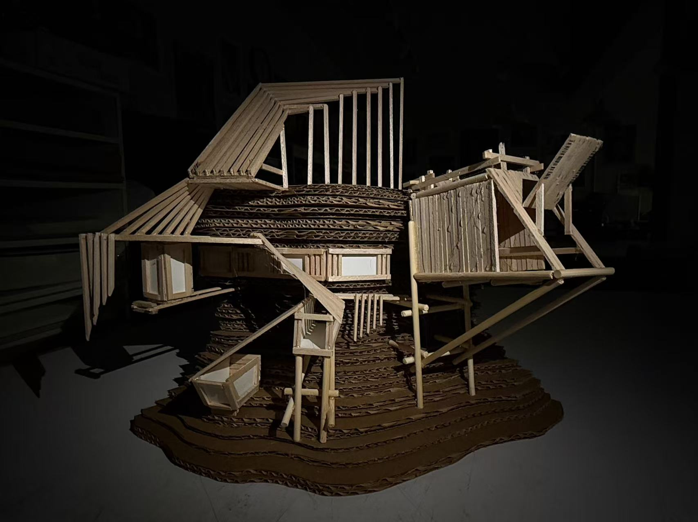

Architecture
Flower in the Rock
This project explores the interface between architecture and the raw forces of nature, taking inspiration from the resilience of plants sprouting stubbornly from barren stone. In this metaphorical translation, the architecture acts as the delicate 'flower' emerging from the solid 'rock' of the cliff face.
Constructed with layered corrugated cardboard to represent tectonic topography and light timber for the architectural interventions, the model features a concave cliff with dramatic high and low protrusions. From this rugged terrain, lightweight structures cantilever outward to form a viewing deck supported by angled struts. Dwellings are intimately nestled deep into the cliff's crevices, while a skeletal structural frame crowns the peak, expressing a poetic tension between heavy earth and fragile, reaching architecture.


